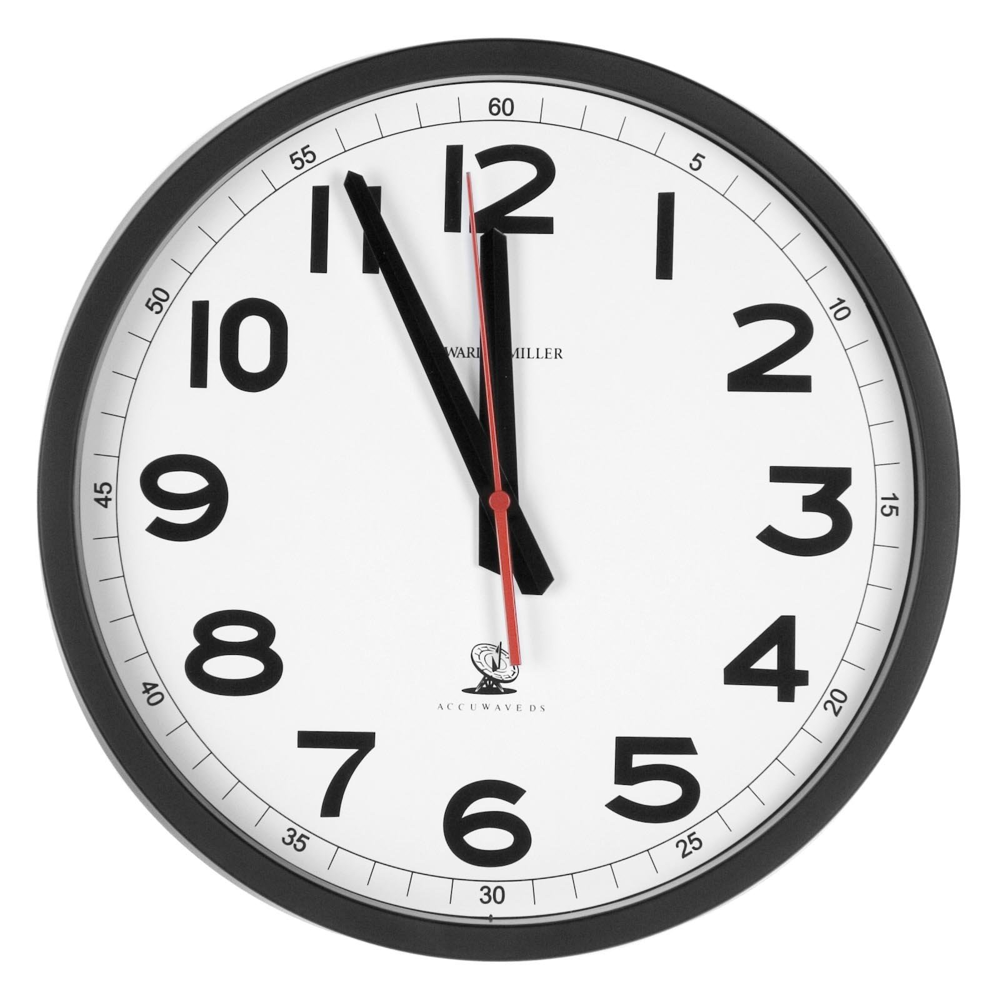

А какая разница во времени у Кемерова и Москвы? Нелегко будет ответить, если живешь в каком-нибудь захолустном Париже.
Идея, которую я попробую описать в этом посте, пришла мне в голову во время путешествия на машине по России позапрошлым летом. Мы несколько раз меняли часовой пояс и порой испытывали из-за этого неудобства.
Может быть хватит переводить стрелки?
Справедливости ради стоит сказать, что идея эта останется только идеей и несмотря на очевидные, по крайней мере для меня, преимущества вряд ли будет реализована. У мировой закулисы есть дела и важнее.

В мире 24 часовых пояса. А счастья нет.
Каждый раз, когда наши слугам становилось скучно и они придумывали какую-нибудь развлекуху с зимним-летним временем или сокращением часовых поясов, я собирался написать этот пост. Сегодня представился очередной шанс сделать это.
Идея заключается в том, чтобы в мировом масштабе отменить часовые пояса вовсе. Нет, это не значит, что в Австралии люди ходят вверх ногами, а в Сибири придётся работать по ночам. Ночью лучше спать. Но это значит, что если я вылетаю из Новосибирска в 18:45 то в Москву прилечу в 23:00. Через 4 часа 15 минут. Логично, правда же? 18:45+4:15=23:00. Если я прошу встретить меня в Нью-Йорке в 15:48, мне нет необходимости уточнять по какому времени. 15:48 будет везде.
Нулевой часовой пояс проходит по гринвичскому меридиану. Давай попробуем считать время по нему. Получается что рабочий день в Кемерове будет начинаться в 2 часа мирового времени. Работаем до 11 часов. Перерыв на обед (для менеджера среднего звена) с 6 до 7. Непривычно? Ну к кнопкам вместо диска на телефоне многие тоже не сразу привыкли.
Перестраиваться придётся, конечно, тем, кто решил понаехать из Кемерова в Москву. В Кемерове они ходили на работу с 2. В Москве придётся работать уже с 5 часов мирового времени. Москвичи ведь и правда начинают работать на 3 часа позже нас (если ты вообще думаешь, что они работают…).
Подавляющему же большинству никогда не нужно будет менять привычек. Как родился там где работают с 5 до 14, так там и пошёл на пенсию. Только в «Одноклассниках» пишешь своей однокласснице из Владивостока: «Мария (Петровна), встречаемся завтра здесь в 15 часов, покажу вам своего внука». И у Марии никаких вопросов.
Понятие летнего-зимнего времени лучше, конечно, окончательно упразднить (и половину депутатов тоже). В крайнем случае, если у твоих коров снижаются надои, с октября по апрель можно работать не с 2 до 11, а с 1 до 10.
Если тебе кажется, что идея сносит крышу, то просто подумай о том, что в Чили (и в других странах южного полушария) зима в июне, а январь — вполне себе лето. Ничего. Живут как-то люди.